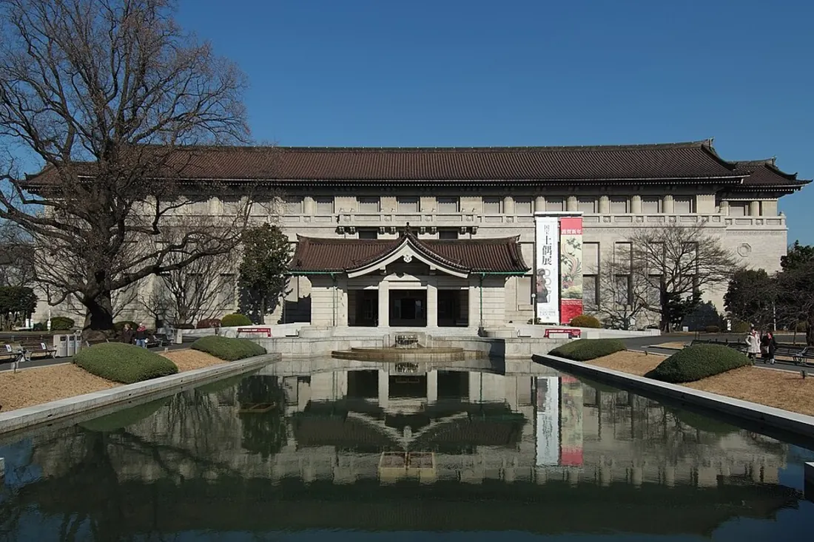

Токийский национальный музей
Токио, Япония
Старейший и крупнейший музей Японии, основанный в 1872 году. Более 110 000 экспонатов — от самурайских доспехов и керамики до буддийской скульптуры и гравюр уки-э. Расположен в парке Уэно.
Сайт музея